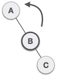

-
Definitions-
Circular Queue
- A Circular Queue is a type of queue in which the last location of the queue is connected to the first location of the queue. (i.e if we have a circular queue with 5 location then the 5th location is connected back to the 1st location).
- It overcomes the problem of unutilized space in linear queue where in order to add new elements more then the size of the queue we had to delete all the previous data. We can do so by adding new data at the location from where data is deleted.
-
Priority Queue
- Priority Queue is a type of queue in which the elements have been assigned priority and the processing of different operation is done according to the priorities. The processing is done as:-
- Element with higher priority is processed first
- Elements with same priorities are processed in order they were added to the queue.
- There are two types of Priority Queue:-
Ascending priority queue and Descending priority queue
- Priority Queue is a type of queue in which the elements have been assigned priority and the processing of different operation is done according to the priorities. The processing is done as:-
-
Stack
- Stack is a linear data structure in which data items are inserted and deleted at one end of the structure. It works in LIFO manner(Last In First Out) which means the data that is inserted/Pushed at last will be deleted/Popped first from the stack.
-
Linked List
- Linked list is a linear collection of data elements that are linked with one another. The datas are stored in a node like structure and each node consists of two fields. The
information fieldwhere actual data is kept andaddress fieldwhich holds the memory address of the next element. The address field of last element points to NULL.
- Linked list is a linear collection of data elements that are linked with one another. The datas are stored in a node like structure and each node consists of two fields. The
20 2040 –> 30 2024 –> 40 NULL -
Doubly Linked List
- Doubly Linked List is a type of linked list in which each node not only consists of information and next element address field but also a additional field that holds the address of the previous node. The address field holding address of previous node of the first node and the address field holding the address of net node of the last node is pointed to NULL
NULL 10 1001 –> 1000 20 1002 –> 1001 30 NULL -
Circular Linked List
- Circular linked list is a type of linked list in which the address field of the final element contains the memory address of the first element. (i.e the final node is linked back to the first node).
10 1001 –> 20 1002 –> 30 1000 -
Enqueue and Dequeue
- Enqueue is the process of inserting an element at the end of the queue that is at the rear of the queue.
- Dequeue is the process of deleting and inserting element at either end of the queue but not in the middle. It is of two types:-
input restrictedandoutput restricted
-
Linear and Non-linear Data structure
- Linear Data structure are those type of data structure which have data elements connected sequentially. All the elements are present at a single level. Example:- Array, lists, Queue, etc.
- Non-linear Data structure are those type of data structure which have data elements connected hierarchically. Elements are present at different levels. Example:- Map, Tree, Graph, etc.
-
Stable and Unstable Sorting
- A stable sorting algorithm are those sorting algorithm that maintains the order of same keys in the original problem even in its sorted form. Example:- Merge sort, Bubble sort, insertion sort, etc.
- A unstable sorting algorithm are those sorting algorithm that doesn’t maintain the order of same keys in the original problem in its sorted result. i.e the order is altered. Example:- Quick sort, heap sort, etc.
-
Internal and External Sorting
- Internal sorting is a way of sorting small collection of data within the main memory. It means the data to be sorted is small enough to be sorted in the main memory itself.
Example: quick sort, radix sort, etc - External sorting is a way of sorting data which cannot be fitted into the main memory thus using the external secondary memory to sort the data.
Example: merge sort, distribution sort etc
- Internal sorting is a way of sorting small collection of data within the main memory. It means the data to be sorted is small enough to be sorted in the main memory itself.
-
Hashing and Collision
- Hashing is the process of making data table using hash functions that converts the given bigger data into smaller key and use them as index. It is used to store data that are bigger in size by breaking them down into smaller keys.
- When hashing list of data some data may yield same key, when two or more data hashes same keys then that condition is called collision in hashing.
-
Collision Resolving technique
- To handle collision we have two main techniques:-
- Open hashing (Separate chaining)
- It is the method in which each cell of the table where collision occurs points to a linked list.
- It is used mostly when we don’t know the number of datas to be inserted or deleted.
- Advantage:-
- It is simple to implement.
- Hash table never fills up.
- Disadvantage:-
- If the chain becomes long, searching time becomes long.
- Uses extra spaces for links
- Closed hashing (Open addressing)
- It is the method in which each data is stored in the hash table itself.
- It is used when the number of datas to be inserted or deleted is known.
- Advantage:-
- No extra spaces for links.
- Every slot of the hash table is used.
- Disadvantage:-
- It requires more computation.
- Clustering and load factor may occur.
- There are three ways of obtaining Closed hashing:-
- Linear probing
- It is the method in which probing (Searching for next empty slot) is linear.
- Clustering occurs while using this method as more collision occurs.
- Quadratic probing
- It is the method in which probing is quadratic.
- It works in i2 in i’th iteration.
- Double hashing
- It is the method in which a second hashing function is done for the same key.
- Clustering is not encountered but time for 2 hashing functions is more.
- Linear probing
- Open hashing (Separate chaining)
- To handle collision we have two main techniques:-
-
Hash function and Hash tables
- Hash functions are those functions that are used to break down the bigger sized data into smaller key that are used as index to store the data.
- Hash table is the table that contains the hashed data.
-
Graph, Connected Graph and Digraph
- A Graph is a set of nodes(or vertices) and a set of arcs(or edges). Each arc in a graph is specified by a pair of nodes.
- A connected graph is a graph that is connected, i.e every vertex in the graph is connected with at least one other vertex.
- The graph is said to be Digraphs(Directed graphs) if the pairs of nodes(vertices) that makes up the arcs (edges) are ordered pairs.
-
Spanning and Minimum Spanning tree
- Spanning tree is a subset of a tree that contains all the nodes in the parent tree and have no cyclic graph formed.
- Minimum spanning tree is a subset of the edges of a connected, edge-weighted undirected graph that connects all the vertices together, without any cycles and with the minimum possible edge weight.
-
Height balanced tree and Weight balanced tree
- A height balanced tree is a binary tree that has balanced height, i.e the difference between height of left subtrees to height of right subtrees is not more than 1.
- A weight balanced tree is a binary tree that has balanced weight, i.e the difference between the left subtree leaves to the right subtree leaves is not more than 1.(
leaves are the nodes in the tree that doesn't have any child node)
-
What is B+ tree
- A B+ tree is a generalized form of BST(Binary Search tree) where all the data are present at the leaf nodes only where as the internal and root node contains the index pointing to the data. The leaf nodes are also connected with each other with a linked list.
-
Huffman code
- A Huffman code is a particular type of optimal prefix code that is commonly used for lossless data compression.
-
What is shortest path algorithm
- Shortest path algorithm is an algorithm that specifies the path from one vertex to another vertex in a weighted graph such that the sum of the edges it took is minimized.
- Example:- Dijkstra algorithm, Bellman-Ford algorithm, etc
-
-
Infix, Postfix and Prefix-
Converting Infix to Postfix
- Step 1: Initialize an empty stack and output list
- Step 2: Read each character (operator or operand) from the infix expression
- Step 3:
- If
(character = operand)append it to the output list - If
(character = operator other than closing parenthesis)append to the stack- If
(the operator has lower or same precedence than the previous operator on the stack)then pop the previous operator append to the output list before appending the current operator on the stack
- If
- If
(character = closing parenthesis)then pop all the operators from the stack till the opening parenthesis pair and append them to the output list.
- If
- Step 4: Repeat step 3 for every character in the infix expression
- Step 5: If
all the characters are read and the stack is not emptythen pop all the operators from the stack append to the output list and the postfix expression is gained.
-
Converting Infix to Prefix
- Step 1: Reverse the infix expression
- Step 2: Obtain the Postfix expression from the reversed infix expression
- Step 3: Reverse the obtained Postfix
-
Evaluating Postfix
- Step 1: Initialize an empty stack
- Step 2: Read the characters from the given postfix expression
- Step 3:
- If (
character = operand) push it to the stack - If (
character = operator)- pop the top two operands from the stack
- evaluate B operator A where
A=top most operand and B=next to the top operand - then push back the result to the stack.
- If (
- Step 4: Repeat step 3 until all character is read and we obtain the result.
-
-
Advantages and Disadvantages-
Advantage of postfix over infix
- There is no need of brackets while using postfix notation
- It is easily understood by computer and easy to implement
- It reflects the order in which operations are performed
- It is slightly easier to evaluate
- It is very convenient for evaluating formulas on a computer with stacks.
-
Advantage of Doubly Linked List
- A DLL can be traversed in both forward and backward direction.
- The deletion operation in DLL is more efficient if pointer to the node to be deleted is given
- We can quickly insert the new node before a given node.
-
Advantage of Circular Queue over Linear Queue
- It takes up less memory than the linear queue.
- A new item can be inserted in the location from where a previous item is deleted.
- Infinite number of elements can be added continuously but deletion must be used.
-
Advantage and Disadvantage of Recursion
- Advantage of Recursion are:-
- Unlike a iteration which have to written every time we have to use them, Recursion function can be defined once and we can call at any place.
- We don’t have to specify any incremental and decremental variables.
- Disadvantage of Recursion are:-
- The time to execute the same problem the Recursion function takes more time than iteration.
- Call overhead is necessary for Recursion.
- Advantage of Recursion are:-
-
Advantage and Disadvantage of Linked List implementation over array
- Advantage of Linked List are:-
- Linked list is a dynamic data structure so it can grow and shrink at runtime by allocating and deallocating memory.
- Insertion and deletion of nodes are really easier.
- Data structures such as stack and queues can be easily implemented using linked list.
- As the size of the linked list can increase or decrease at run time so there is no memory wastage.
- Disadvantage of Linked list are:-
- Elements or nodes traversal is difficult in a linked list.
- In linked list reverse traversing is really difficult.
- More memory is required to store elements in the linked list as compared to arrays.
- Advantage of Linked List are:-
-
-
Difference-
Stack and queue
Stack Queue It is a linear list in which data is inserted and deleted from the same end called top of stack It is a linear list in which data is inserted from one end called rear and deleted from another end called front. It has only one pointer called tos It has two pointers called front and rear It works in LIFO(Last In First Out) manner It works in FIFO(First In First Out) manner Example: Stack of books, plates, etc Example: Line in a bank, toll, etc -
Data structure and Data types
Data structure Data types Data structure is the collection that holds data which can be manipulated and used in programming so that operations and algorithms can be more easily applied. Data type is the representation of nature and type of data that has been going to be used in programming or in other words data type describes all that data which share a common property. Data Structures in programming are implemented in concrete implementation as their definition is already defined by the language that what type of data they are going to store and deal with. Data types in programming are implemented in abstract implementation whose definition is provided by different languages in different ways. In Data structure the data is assigned to using some set of algorithms and operations like push, pop and so on. In case of data type the value of data is not stored as it only represents the type of data that can be stored. Time complexity comes in the case of data structure as it mainly deals with manipulation and execution of logic over data that it stores. In case of data type only type and nature of data is concerned then there is no issue of time complexity -
infix, postfix and prefix
Infix expression Prefix expression Postfix expression The expression in which the operators are in between the operands is called infix expression. The expression in which the operators are ahead of the operands is called prefix expression. The expression in which the operators are after the operands is called postfix expression. <operand><operator><operand>syntax is followed.<operator><operand><operand>syntax is followed.<operand><operand><operator>syntax is followed.It is easy to understand by humans. It is easy to understand by computers. It is easy to understand by computers. The expression consists of brackets. The expression doesn’t consist of brackets. The expression doesn’t consist of brackets. It is also called an arithmetic expression. It is called polish notation. It is called reverse polish notation. -
Circular Queue and linear Queue
Circular Queue Linear Queue In this queue the front and rear pointer can point at the same place. In this queue the front and rear pointer cannot point at the same place In this queue the last element is connected to the first element In this queue the last element is not connected the first element. Pointers are updated by (P+1)%n, where P=pointer value, n=size-1 Pointers are updated by 1 We can insert data to the space from where we deleted a data in a already full Circular queue. We have to delete all the data of the queue first in order to insert data in a already full linear queue. -
Recursion and Iteration
recursion iteration It is the process of repeating a function over and over again until a base condition is satisfied. It is the process of repeating a block of code until some condition is satisfied. We use it for repetition of function. We use it for repetition of block of code. returnwith calling of the function is used to do recursion.for,while, etc loop are used to do iteration.If elsestatement is used to check the base condition.Conditions are written inside paranthesis of the loop. -
Static list and dynamic list
Static list Dynamic list Memory allocation is done in compile time. Memory allocation is done in runtime. Data is stored in a stack. Data is stored in heap. Datas cannot be changed during the program. Datas are determined during the program. Max size is predetermined. Max size of the list can be determined during program time. -
Deterministic algorithm and Non-Deterministic algorithm
Deterministic algorithm Non-deterministic algorithm The algorithm in which the output is always same for the given input is called deterministic algorithm. The algorithm in which the output is different for the same given input is called non-deterministic algorithm. Can solve the problem in polynomial time. Can’t solve the problem in polynomial time. Can determine the next step of execution. Cannot determine the next step of execution due to more than one path algorithm can take. -
Graph and Tree
Graph Tree Two nodes can have unidirectional and bidirectional paths Two vertices can have only one path. There is no concept root node on graph. There exactly one root node and every child have only one parent. Graphs can have loop as well as self loop. Tree cannot have loop and self loop. Graph is traversed using BFS and DFS methods. Tree is traversed using pre-order, in-order and post-order techniques. It has a network model. It has a hierarchical structure. -
Traversing in Graph and Traversing in Tree
Traversing in Graph Traversing in Tree Graphs can have unidirectional and bidirectional Path between vertices. Trees can have only one path between any two vertices. We use BFS (Breadth First Search) and DFS (Depth First Search) traversing in Graphs. We use in-order, pre-order and post-order traversing in Trees. It has a network model. It has a hierarchy model. It can have loops and self-loops. Making traversing difficult. It cannot have loops and self-loops. Hence traversing is easy compared to graphs. -
Bubble sort and Selection Sort
Bubble Sort Selection Sort It is a simple sorting algorithm that repeatedly goes through the list, comparing adjacent pairs and swapping them if they are in wrong order. It is a simple sorting algorithm that takes the smallest value(considering ascending order) in the list and moves to the proper position in the array. Checks the neighboring elements and swaps them accordingly. Selects the minimum element from the unsorted sub-array and places it at the next position of the sorted array. Less efficient. More efficient It is slower than selection sort. Faster than bubble sort. -
Set matrix and Linked list representation of graph
Set matrix representation(Adjacency matrix) Linked list representation(Adjacency list) This representation makes use of the VxV matrix. Where V is the number of vertices in the graph. In this representation, for every vertex we store its neighbors in a linked list. Space required in worst case is O(V2). Space required in worst case is O(V+E) In order to add a new vertex to VxV matrix the storage must be increases to (V+1)2. In order to add a new vertex we add a new node with a pointer next pointing to the neighbor vertex. To add an edge say from i to j, matrix[i][j] = 1 We check the availability of the vertices and add linked nodes accordingly. -
Singly Linked list and Doubly linked list and Circular Linked List
Singly Linked List Doubly Linked List Circular Linked List Singly Linked list or simply Linked List is a list of collection of data that are linked with each other. Doubly Linked List is a type of Linked list that also contains the link back to the previous node. Circular Linked List is a type of linked list in which the last node points back to the first node forming a circle. Each node consists of only one address field that points to the next node. Each node consists of two address fields that points to the next and previous node respectively. Each node consists of only one address field that points to the next node. The final node’s address field points to NULL. The final node’s next address field as well as the first node’s previous address field both points to NULL. The final node’s address field points to the first node. Reverse traversing is very difficult. Reverse traversing is easy. Reverse traversing is difficult. -
Breadth First Search and Depth First Search
Breadth First Search(BFS) Depth First Search(DFS) BFS is a traversal technique used to traverse through a graph where it visits all the neighbors first and moves to more deeper nodes. DFS is a traversal technique used to traverse through a graph where it visits all the children nodes of the source node first and climbs back to visit the unvisited neighbors. It uses Queue data structure for finding the shortest path. It uses the stack data structure. It is more suitable for searching vertices which are closer to the given source. It is more suitable when there are solutions away from source. It considers all neighbors first and so not suitable for decision making trees used in games or puzzle It considers the children nodes first hence more suitable for games and puzzles. -
ADT and C++ Class
ADT C++ class An ADT is a abstract data type which means the implementation of an ADT is not defined. A c++ class is an data type that consists of data members and member functions. It an abstract type. It isn’t abstract. We use ADT to make a outer layer of operations for algorithms which can be used by other data types to define how the operation works. We use the classes to implement the ADT to define the operation to be performed. Example:- interface, Example:- std, user defined classes, etc -
-
More than definition-
Application of Stack
- Stack can be used in computing as well as non computing sector. Some of its application in computing sector are:-
- Expression evaluation like postfix, infix expression
- Converting one expression to another
- For string conversion functions
- For checking opening and closing parenthesis
- Some application in non-computing sector are:-
- Stacks of books, plates, etc
- Wearing and removing Bangles
- Garage with only one car wide width
- Button cell stacked in watches
- Stack can be used in computing as well as non computing sector. Some of its application in computing sector are:-
-
Application of Linked list
- Linked list can be used to:-
- Implementation of stacks and queues
- Performing arithmetic operations on long integers
- Manipulation of polynomials by storing constants in the node of linked list
- Implementation of graphs
- Linked list can be used to:-
-
Application of B+ tree
- It is used to store large amounts of data which cannot be stored in main memory.
- It is used to make trees have faster operation in insertion, deletion and search.
- It is used in database indexing
- It is used in Multilevel indexing
-
Condition for stack overflow and stack underflow
Stack overflowis the condition in stack when data is tired to insert into a stack that has passed its storage capacity. i.e When the data to be inserted are more than than the number of data the stack can hold.Stack Underflowis the condition in stack when data is tried to delete from the stack that doesn’t have any data in it. i.e When the stack is empty and deletion operation is performed.
-
List 5 basic operation of Linked list
- The 5 basic operation of Linked List are:-
Insertion:It is the process of adding a new node or data at the beginning of the linked list.Deletion:It is the process of deleting a node or data from the beginning of the linked list.Display:It is the process of displaying all the nodes or datas currently at the linked list.Search:It is the process of searching a data or node using the given key.Delete:It is the process of deleting a node or data using the given key.
- The 5 basic operation of Linked List are:-
-
4 types of dequeue
- The 4 types of dequeue in Double ended queue are:-
Dinject:It is the process of inserting data from the rear of the queue.Dpop:It is the process of deleting data from the front of the queue.Dpush:It is the process of inserting data from the front of the queue.Deject:It is the process of deleting data from the rear of the queue.
- The 4 types of dequeue in Double ended queue are:-
-
Balancing AVL Tree
-
Left Rotation
- If a tree becomes unbalanced, when a node is inserted into the right subtree of the right subtree, then we perform a single left rotation

- In our example, node A has become unbalanced as a node is inserted in the right subtree of A’s right subtree. We perform the left rotation by making A the left-subtree of B.
-
Right Rotation
- AVL tree may become unbalanced, if a node is inserted in the left subtree of the left subtree. The tree then needs a right rotation.

- In our example, node C has become unbalanced as a node is inserted in the left subtree of C’s left subtree. We perform the right rotation by making C the right-subtree of B.
-
Left-Right Rotation
- A left-right rotation is a combination of left rotation followed by right rotation.
-
State Action 
A node has been inserted into the right subtree of the left subtree. This makes C an unbalanced node. These scenarios cause AVL tree to perform left-right rotation. 
We first perform the left rotation on the left subtree of C. This makes A, the left subtree of B. 
Node C is still unbalanced, however now, it is because of the left-subtree of the left-subtree. 
We shall now right-rotate the tree, making B the new root node of this subtree. C now becomes the right subtree of its own left subtree. 
The tree is now balanced - Right-Left Rotation
- A right-left rotation is a combination of right rotation followed by left rotation.
State Action 
A node has been inserted into the left subtree of the right subtree. This makes A, an unbalanced node with balance factor 2. 
First, we perform the right rotation along C node, making C the right subtree of its own left subtree B. Now, B becomes the right subtree of A. 
Node A is still unbalanced because of the right subtree of its right subtree and requires a left rotation.  A left rotation is performed by making B the new root node of the subtree. A becomes the left subtree of its right subtree B. The tree is now balanced -
Tree traversal
- Tree traversal is the process of visiting every node in a tree at once. It is used in many application in order to find specific node to delete or add node to that node, etc.
- There are different ways of traversing a tree. They are classified according to the order of nodes they visit. They are:-
- Pre-Order (NLR)
- In this way of traversing the tree we first visit the root node and visit its left node followed by its right node.
- In-Order (LNR)
- In this way of traversing the tree we first visit the left most node then its parent node followed by the right node.
- Post-Order (LRN)
- In this mode of traversing the tree we first visit the left most node then we visit the right node followed by the parent node.
- Pre-Order (NLR)
-
Adjacency matrix representation of graph
- A adjacency matrix is a square matrix used to represent a finite graph.
- It specifies the number of direct paths a vertex have with other vertex.
- For undirected graph:-
- For directed graph:-
-
-
Sorting-
What is Sorting
- Sorting is the operation of arranging data in some given order such as increasing or decreasing.
-
Quick Sort
- Quick sort is a divide and conquer sorting algorithm used to sort list of array by dividing the list into sub list and recursively sorting each sub-lists.
- It has a very good average case behavior among all the sorting techniques.
- In quick sort we make partition of the array and choose a key value called pivot and rest of the elements are grouped into two partition such as:-
- One partition contains elements smaller than key value
- Another partition contains elements larger than key value
Example:
-
Radix Sort
- Radix sort or Bucket sort is a sorting technique that is used to sort the list of positive numbers only. In this sorting technique we initialize an array of size the same as Number of data in the list and all are set to zero. They are called cell of bucket,(hence the Bucket sort).
- In first iteration the unit digit numbers are placed in the bucket and sorted, in second iteration tenth digit numbers are sorted and so on.
Example:
-
Selection Sort
- It is one of the simplest form of sorting. In this sort as the name suggest we select a element compare that with all the other elements and interchange the selected element with the compared element if selected element is greater.
- After the first iteration the smallest number is placed at the 0th index of the list.
- Then we select another element and compare that with all the remaining element other than the 0th index element.
- For list having
nelements we have to iterate(n-1)times. Example:-
-
Heap Sort
- Heap sort is a comparison based sorting technique based on Binary Heap data structure. It is similar to selection sort where we first find the maximum element and place the maximum element at the end. We repeat the same process for the remaining element.
- Algorithm for heap sort:-
- Build a max heap from the input data.
- At this point, the largest item is stored at the root of the heap. Replace it with the last item of the heap followed by reducing the size of heap by 1.
- Repeat above steps while the size of the heap is greater than 1.
Example:
-
Merge Sort
- Merge sort is the sorting technique that divides the list into pairs sort them and merge them to get a bigger sorted list. We do this until we get one list having size
Nfor a given unsorted list of sizeN
- Merge sort is the sorting technique that divides the list into pairs sort them and merge them to get a bigger sorted list. We do this until we get one list having size
-
-
Trees-
Construct AVL Tree
Step 1: Insert the node in the same way as in BST Step 2: Check Balance factor(BF) of each node. BF = height of left nodes - height of right nodes Step 3: If(BF != either -1,0,1) then If(Nodes are in straight lines) Apply single rotation to correct the balance factor. If(Nodes are in dog leg position) Apply double rotation to correct the balance factor Step 4: Continue adding and checking from step 1 to 3 for all the nodes to insert. -
Construct BST Tree
Step 1: Insert the first element as root node Step 2: Compare the new element with the root node If(new element is bigger) add to right of the root node If(new element is lesser) add to right of the root node Step 3: Compare the next element with root same as in step 2 and also compare with the previous element in same manner if necessary Step 4: Repeat step 3 for all the remaining elements. -
Construct Huffman Tree
Step 1: Make nodes of all the data non-repeatedly, instead write frequency of occurrence. Step 2: Add any two nodes with the least frequencies and create a new node with that frequency as the data and the two nodes as child nodes. Step 3: Move those child nodes a level below. Step 4: Repeat the step 2 and 3 in the top most level until only one root node is encountered at the top most level. -
Generate Huffman code
Step 1: Make a Huffman tree for the given data Step 2: Assign 0's to all the left edges and 1's to all right edges. Note: We can assign 0's to right and 1's to left also Step 3: Now from the root node move towards the node you want the code of.
-
-
Algorithms-
Kruskal’s Algorithm
Step 1: Write all the edges from smallest to biggest. Step 2: Take the smallest edge from the list if (cycle is formed) discard the edge if (cycle is not formed) add to new tree and remove the edge form list Step 3: Repeat Step 2 until all the vertices are joined. -
Dijkstra Algorithm
Step 1: Write the paths from the source to all the vertices. Step 2: Give them initial distance of infinity Step 3: Calculate the path distance from Source to its direct neighbors If (The new Path is smaller) then exchange the path distance and update the previous vertex. Step 4: Look for new smallest path with unvisited vertex Calculate the path from Source to the neighbors of the new vertex If (The new Path is smaller) then exchange the path distance and update the previous vertex. Step 5: Repeat step 4 until destination node is gained.
-
Wars hall’s Algorithm
Step 1: Make a Copy of the adjacent matrix of the graph. Step 2: For each nodes(one to another) look for paths if any list the pairs. Step 3: For each node if `there is at least one or more pairs in the list` put `1` else put `0` -
Binary tree from given Pre-order and In-order traversal
Step 1: The first node of the pre-order is always root node. Step 2: Look at the next node in pre-order and compare with root node in in-order. If (The new node is in left of the root) put the new node to left else put the new node to right. Step 3: Repeat step 2 for every other node from pre-order compare with each node already added too if necessary. -
Tower of Hanoi
Assume we have N disks in source peg and we have 2 other pegs auxiliary and destination peg Step 1: Move N-1 disks from source to auxiliary peg Step 2: Move Nth disks from source to destination peg Step 3: Move N-1 disks form auxiliary to destination peg
-
-
Short Notes-
Divide and Conquer algorithm
- Divide and Conquer algorithm are those type of algorithm where the original problem is divided into smaller problems and solving them recursively. As the name suggest we divide the problem into smaller similar problems and Conquer them(i.e solve them).
- Most of the divide and Conquer algorithms have three parts:- Divide the problem into number of subproblems similar to the original problem, Conquer the subproblems by solving them recursively and finally Combine the solutions from the subproblems into the solution of original problem.
- Some of the divide and conquer algorithms are:-
quick sort,merge sort, etc
-
Worst case Complexity
- Worst case complexity is a method that measures the resources(i.e running time, memory, etc) of an algorithm for the given number of inputs.
- It gives an upper bound of the algorithm determining the maximum time an algorithm is running or maximum memory usage it does.
- It is used to check the efficiency of two or more algorithms for a given number of inputs.
-
Big O Notation
- Big o notation is a notation used to describe the performance and complexity of an algorithm.
- It specifically denotes the worst case scenario and can be used to describe the execution time required on the space used by the algorithm.
- It is helpful in the sense that it helps to build much more efficient algorithms for certain tasks in programs.
-
Min vs Max heap
- Heap is a special type of complete binary tree in which the values of the parent node are compared with the values in its children nodes. There are two types of heap, they are:-
- Min heap is a type of heap in which the value of the parent node must be less than or equal to the values of its children nodes.
- Max heap is a type of heap in which the value of the parent node must be greater than or equal to the values of its children nodes.
- Heap is a special type of complete binary tree in which the values of the parent node are compared with the values in its children nodes. There are two types of heap, they are:-
-
Transitive Closure
- Transitive closure is the set of relation (r*) in a graph G that contains all the possible direct links from one vertex to another if they are linked in some way in as minimum relations as possible. Where the set of relation ( r ) is the subset of (r*)
- It is used when we want to know if a path of certain length from one node to another node exists or not in the given non weighted , directed graph.
- Example:- We want to find if a path of length 2 or less exists or not between node
a and bthen the value of(adj[a][b] || adj~2~[a][b])must be truewhere adj and adj~2~ are adjacency matrix for path of length 1 and 2 respectively
-
Deque
- Deque abbreviation for Double Ended Queue is a generalized form of Queue, Where the insertion and deletion operation can be done at both the front and rear ends.
- As we can insert and delete from both the ends we can implement a Queue as well as a stack using Deque.
- Some of the operations of Deque are:
insertFront(), insertLast(), deleteFront(), deleteLast(), isEmpty(), isFull(), etc - It is used in a dynamic multithreading processing algorithm called work stealing algorithm where one thread can steal work from another thread. By using deque we can implement each thread as deque giving the ability to steal work from one deque by another.
-
Serial and Parallel algorithm
- Serial algorithm are those type of algorithm that handles the set of operations serially, i.e one at a time. It is the traditional way of handling algorithm. Single processor is needed to handle this type of algorithm. It is easy to implement but can take more time to solve a problem then parallel algorithm.
- Parallel algorithm are those type of algorithm that handles multiple set of operations at a given time i.e parallelly. Multiple processor is needed to handle this type of algorithm. It is hard to implement as compared to serial algorithm but takes much less time than that of serial algorithm to solve a certain problem.
-
Game Tree
- Game Tree is one of the application of trees, where we determine the best next possible move in games like tic-tac-toe, chess, etc after analyzing all the possible moves at the given point of the game.
- Although the next best move for that player doesn’t yields ultimate victory for that player as the game tree can only determine the best next move and cannot predict several moves ahead.
- The evaluation returns certain numerical result, the higher the result the better the next move and the lower the result the least effective the next move.
-
-
Algorithms for programs-
Insert and delete from a Circular Queue
- For Insertion,
front, rear = pointers and MAX = size of Queue Assume we start from front = rear = -1- Step 1: IF (
front == (rear+1)%MAX) Overflow and Exit - Step 2: rear = (rear+1)%MAX;
- Step 3: queue[rear] = data;
- Step 4: IF (
front == -1) front = 0;
- Step 1: IF (
- For deletion,
Same assumtion as above- Step 1: IF (
rear == -1 && front == rear) Underflow and Exit - Step 2: delete = queue[front];
- Step 3: front = (front+1)%MAX;
- Step 4: IF (
front == (rear+1)%MAX) front = rear = -1;
- Step 1: IF (
- For Insertion,
-
Using Stack as Linked List
- Since insertion and deletion can only be done from one end in stack but from both end in Linked List. We take any one end for now
frontas theTOSof the Linked list- For Insertion in the front
Start points to the first node- Step 1: Create a new node [newNode]
- Step 2: newNode->next = start;
- Step 3: start = newNode;
- For deletion from the front
delete is a function that delets the given node- Step 1: Create a temporary node [t1]
- Step 2: t1 = start;
- Step 3: start = start->next;
- Step 4: delete(t1);
- Since insertion and deletion can only be done from one end in stack but from both end in Linked List. We take any one end for now
-
Linked List other operations
Insertion in the rear- Step 1: Create a new node [newNode]
- Step 2: Create a temporary node [t]
- Step 3: t = start;
- Step 4: While(
t->next != NULL) { t= t->next; } - Step 5: t->next = newNode;
Deletion from the rear- Step 1: Create two temporary nodes [t1,t2]
- Step 2: t1 = t2 = start;
- Step 3: Traverse t1 to the end of the list
- While (
t1->next != NULL) { t1 = t1->next; }
- While (
- Step 4: Traverse t2 until t1
- While (
t2->next != t1) { t2 = t2->next; }
- While (
- Step 5: t2->next = t1->next;
- Step 6: delete(t1);
Insertion after the given node- Step 1: Read the given key [k]
- Step 2: Create a new Node [newNode]
- Step 3: Create a temporary node [t]
- Step 4: t = start;
- Step 5: While(
t->next != k) { t = t->next; } - Step 6: newNode->next = t->next;
- Step 7: t->next = newNode;
Deletion of the given node- Step 1: Read the given key [k]
- Step 2: Create a temporary node [t]
- Step 3: t = start;
- Step 4: While(
t->next != k) { t = t->next; } - Step 5: t-> next = k->next;
- Step 6: delete(k)
-
Insertion and deletion in Doubly Linked listInsertion at the front- Step 1: Create a new node [n]
- Step 2: n->left = start->left;
- Step 3: n->right = start;
- Step 4: start->right = n;
Deletion from the front- Step 1: Create a temporary node [t1]
- Step 2: t1 = start;
- Step 3: start = start->right;
- Step 4: delete(t1);
Insertion at the end- Step 1: Create a new node [n]
- Step 2: Create a temporary node [t]
- Step 3: t = start;
- Step 4: While(
t->right != NULL) { t = t->right; } - Step 5: n->right = t->right;
- Step 6: t->right = n;
- Step 7: n->left = t;
Deletion from the end- Step 1: Create two temporary node [t1, t2]
- Step 2: t1 = t2 = start;
- Step 3: While(
t1->right != NULL) { t1 = t1->right; } - Step 4: While(
t2->right != t1) { t2 = t2->right; } - Step 5: t2->right = t1->right;
- Step 6: delete(t1);
-
Algorithm to delete element from B+ tree
- Step 1: Traverse up to the leaf node where the data is present.
- Step 2: If (
the node has more than minimum number of keys it can hold) then simply delete the key/data. - Step 3: If (
the node has the exact number of keys it can hold) then delete the key and borrow a key from immediate sibling also make the median key of the sibling node the parent node. - Step 4: If (
the node has more than minimum number keys it can hold and the key is present at the internal node also) then delete the key from the leaf as well as internal node and make the in-order successor fill up the internal node. - Step 5: If (
the node has the exact number of keys it can hold and the key is present at the internal node also) then delete the key and borrow a key from the immediate sibling through the parent and fill the empty internal node with the borrowed key. - Step 6: If (
the node has the exact number of keys it can hold and the key is present at the internal node above immediate parent node) then delete the key, merge the empty space with its siblings and fill the grandparent node with the in-order successor. - Step 7: If (
the node has the exact number of keys it can hold and the key is present at the internal node and there is no immediate successor) then delete the key and move the grandparent node a step down to make a parent node. [ it shrinks the height of B+ tree ]
-